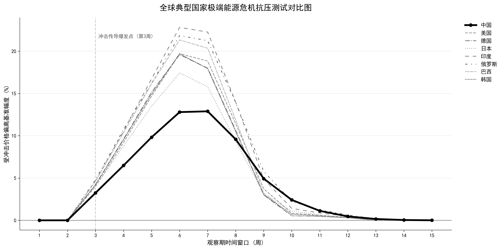

🏆 极限压力测试与综合评价
84 个国家/地区极限压力测试结果（固定榜单）与 AHP×熵权组合权重占比。
四项指标权重占比（AHP×熵权 组合权重）
ℹ️
全球典型国家极端能源危机抗压测试实证图
LSTM 模拟油价暴涨 40% 的抗压能力走势对比

模型说明： 基于 LSTM 神经网络，在历史数据末端人为注入连续 4 周国际油价暴涨 10%（复利超 40%）的“黑天鹅”压力冲击。
什么是“黑天鹅”压力冲击： 借用金融学术语，“黑天鹅”指极其罕见、难以预测且破坏力惊人的危机事件（例如2020年新冠疫情或2021年苏伊士运河堵塞）。本模型刻意构造了这种小概率的极端暴涨情境，以此来检验各国能源市场在面临不可预见的灾难时，其抗冲击防线的极限承压能力。
结果详细分析：
- 冲击阶段（第1-4周）： 图中粗黑实线代表中国。在第 3 周面临超过 40% 的累计极端涨幅冲击时，绝大多数国家（如虚线代表的欧美等国）国内价格迅速失控，偏离基准幅度飙升至 15%~25% 的高危区间。而中国国内汽油价格的偏离幅度仅约为 12%，涨幅被强制“腰斩”。这正是中国成品油定价机制中 130美元/桶“天花板价” 与 50元/吨“调价搁浅红线” 发挥了关键的物理阻断作用。
- 衰减恢复期（第5-10周）： 随着外部冲击结束，大部分国家的国内油价在剧烈震荡中艰难回调。反观中国，由于在冲击期内价格“防洪堤”并未被击穿，其恢复曲线不仅平滑且迅速，仅在第 9 周左右就已几乎完全贴合基准水平。
- 综合评价： 实证结果清晰地表明，在面对史诗级的“黑天鹅”暴涨危机时，中国的定价机制展现出了卓越的“抗击打韧性”与“平滑恢复能力”。它成功剥离了国际市场恐慌情绪向国内实体经济的传导，其抗风险能力显著优于同期缺乏严格价格保护机制的其他发达或发展中国家。